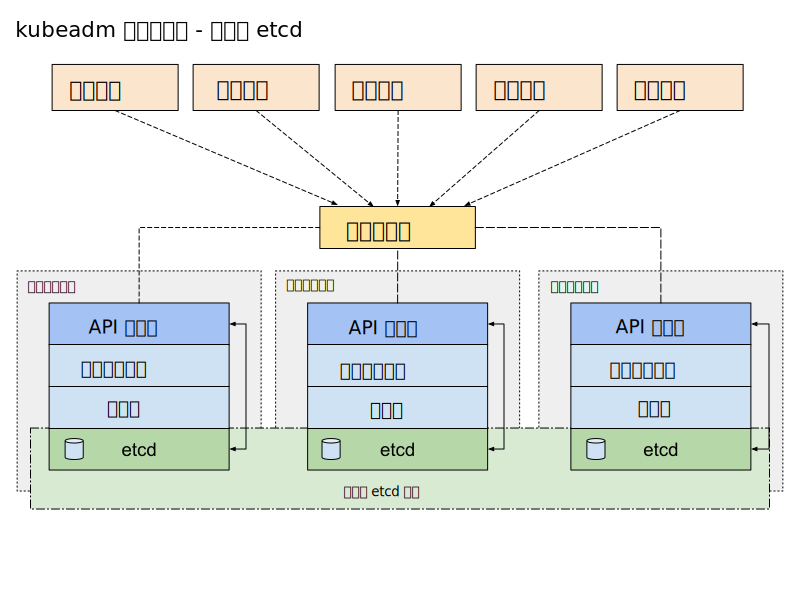
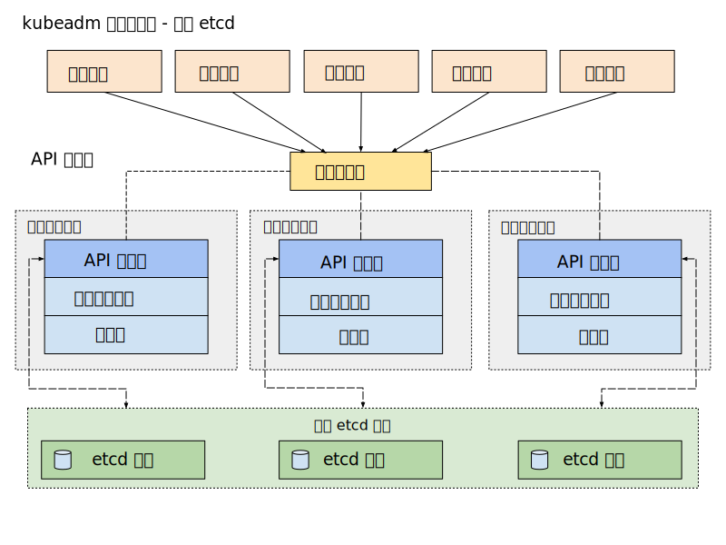
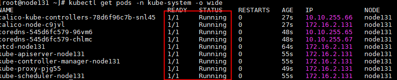

安装部署
- Kubernetes原生的可扩展性受制于
list/watch的长连接消耗，生产环境能够稳定支持的节点规模是1000左右。- 目前为止，在容器里运行
kubelet依然没有非常稳妥的解决办法（因为kubelet需要设置容器的namespace），不建议在生产环境中直接使用（测试环境可以使用KIND）。
高可用架构
API Server来说，其高可用性是通过多实例部署、负载均衡、etcd集群、健康检查和监控等多种机制共同实现的，而不是通过leader election来决定哪个实例可以对外提供服务。
leader election机制更适用于需要确保同一时刻只有一个实例执行特定任务的场景，如kube-scheduler和kube-controller-manager。
堆叠（Stacked）etcd 拓扑

外部 etcd 拓扑

基于 kubeadmin 部署
参看官方文档：使用 kubeadm 引导集群 | Kubernetes
系统配置（所有节点）
时钟同步
$ yum install chrony -y
$ systemctl start chronyd
$ systemctl enable chronyd
# 检查时间来源
$ chronyc sources
关闭selinux
# 1.临时关闭
setenforce 0
# 2.永久关闭，再执行以下命令
sed -i "s/SELINUX=enforcing/SELINUX=disabled/g" /etc/selinux/config
关闭swap分区
关闭防火墙
网络配置
br_netfiler作用：br_netfilter模块可以使 iptables 规则可以在 Linux Bridges 上面工作，用于将桥接的流量转发至iptables链。
- 如果没加载，影响同node内的pod之间通过service来通信，具体原因可见k8s_network
# 加载br_netfilter模块，可通过lsmod | grep br_netfilter检查是否加载
modprobe br_netfilter
# 绑定非本机 IP （ip_nonlocal_bind）
# 将Linux系统作为路由或者VPN服务就必须要开启IP转发功能（ip_forward）
# ip_foward=1 将一个接口的流量转发到另外一个接口，该配置是 Linux 内核将流量从容器路由到外部所必须
vim /etc/sysctl.d/kubernetes.conf
net.bridge.bridge-nf-call-ip6tables = 1
net.bridge.bridge-nf-call-iptables = 1
net.ipv4.ip_nonlocal_bind = 1
net.ipv4.ip_forward = 1
vm.swappiness = 0
sysctl -p /etc/sysctl.d/kubernetes.conf
加载ipvs模块
默认情况下，kube-proxy将在kubeadm部署的集群中以iptables模式运行；(需确认）
需要注意的是，当内核版本大于4.19（centos 7内核版本为3.10）时，移除了nf_conntrack_ipv4模块，kubernetes官方建议使用nf_conntrack代替，否则报错无法找到nf_conntrack_ipv4模块
yum install -y ipset ipvsadm
# nf_conntrack_ipv4
cat > /etc/sysconfig/modules/ipvs.modules <<EOF
#!/bin/bash modprobe -- ip_vs
modprobe -- ip_vs_rr
modprobe -- ip_vs_wrr
modprobe -- ip_vs_sh
modprobe -- nf_conntrack
EOF
chmod +x /etc/sysconfig/modules/ipvs.modules && bash /etc/sysconfig/modules/ipvs.modules
其它配置
所有用户的打开文件数
echo "* soft nofile 65536" >> /etc/security/limits.conf
echo "* hard nofile 65536" >> /etc/security/limits.conf
安装容器运行时（所有节点)
Docker Engine
Docker Engine 没有实现 CRI， 而这是容器运行时在 Kubernetes 中工作所需要的。 为此，必须安装一个额外的服务 cri-dockerd。 cri-dockerd 是一个基于传统的内置 Docker 引擎支持的项目， 它在 1.24 版本从 kubelet 中移除。
1）配置yum源
2）安装docker
3）配置docker
mkdir /etc/docker
# 修改`docker Cgroup Driver`为`systemd`,`overlay2`默认存储驱动；
vim /etc/docker/daemon.json
{ "exec-opts": ["native.cgroupdriver=systemd"],
"log-driver": "json-file",
"log-opts": {
"max-size": "100m"
},
"storage-driver": "overlay2",
"storage-opts": [
"overlay2.override_kernel_check=true"
],
"registry-mirrors": [
"http://hub-mirror.c.163.com",
"https://registry.docker-cn.com"
]
}
4）启动docker
5）安装 cri-dockerd
Mirantis/cri-dockerd (github.com)
Containerd
1）安装 containerd
containerd/getting-started.md at main · containerd/containerd (github.com)
2）配置 systemd cgroup 驱动
在 /etc/containerd/config.toml 中设置：(配置完后重启sudo systemctl restart containerd)
[plugins."io.containerd.grpc.v1.cri".containerd.runtimes.runc]
...
[plugins."io.containerd.grpc.v1.cri".containerd.runtimes.runc.options]
SystemdCgroup = true
安装kubeadm/kubelet/kubectl（所有节点)
kubeadm：用来初始化集群的指令。kubelet：在集群中的每个节点上用来启动 Pod 和容器等。kubectl：用来与集群通信的命令行工具
- 配置 k8s 的 yum repo
cat <<EOF > /etc/yum.repos.d/kubernetes.repo
[kubernetes]
name=Kubernetes
baseurl=http://mirrors.aliyun.com/kubernetes/yum/repos/kubernetes-el7-x86_64
enabled=1
gpgcheck=0
repo_gpgcheck=0
gpgkey=http://mirrors.aliyun.com/kubernetes/yum/doc/yum-key.gpg
http://mirrors.aliyun.com/kubernetes/yum/doc/rpm-package-key.gpg
EOF
# 重新构建缓存索引
yum clean all
yum makecache fast
- 安装 kubelet, kubeadm, kubectl
yum install -y kubelet kubeadm kubectl --disableexcludes=kubernetes
# disableexcludes=kubernetes：禁掉除了这个kubernetes之外的别的仓库
- 启动 kubelet
# 开机自启并立即启动
sudo systemctl enable --now kubelet
# 重新安装（或第一次安装）k8s，未经过kubeadm init 或者 kubeadm join后，
# kubelet会不断重启，这个是正常现象……，执行init或join后问题会自动解决
初始化（仅master节点）
推荐使用yaml进行初始化：示例 kubeadm-config.yaml
apiVersion: kubeadm.k8s.io/v1beta2
kind: InitConfiguration
nodeRegistration:
kubeletExtraArgs:
cgroup-driver: "systemmd"
---
apiVersion: kubeadm.k8s.io/v1beta2
kind: ClusterConfiguration
# 控制 kube-apiserver、kube-controller-manager、kube-scheduler 和 kube-proxy 的版本
kubernetesVersion: v1.21.1
# kubectl config get-clusters 查看的结果
# 查看 kubeconfig 可看到 cluster.name 的内容一致
clusterName: "cluster.local"
# 定义控制面板的地址
controlPlaneEndpoint: "node131:6443"
controllerManager:
extraArgs:
horizontal-pod-autoscaler-sync-period: "10s"
node-monitor-grace-pe riod: "10s"
apiServer:
exitArgs:
runtime-config: "api/all=true"
imageRepository: registry.aliyuncs.com/google_containers
networking:
podSubnet: "10.10.0.0/16"
执行命令
#kubeadm init \
# --apiserver-advertise-address=192.168.0.113 \
# --image-repository registry.aliyuncs.com/google_containers \
# --kubernetes-version v1.22.1 \
# --service-cidr=10.1.0.0/16 \
# --pod-network-cidr=10.244.0.0/16
# 将控制平面证书上传到 kubeadm-certs Secret。
$ kubeadm init --config=kubeadm-config.yaml --upload-certs
- 初始化 kubectl ，供特定用户使用
rm -rf $HOME/.kube/
mkdir -p $HOME/.kube
sudo cp -i /etc/kubernetes/admin.conf $HOME/.kube/config
sudo chown $(id -u):$(id -g) $HOME/.kube/config
Pod网络插件安装（仅Master）
CNI 插件 calico
下载 calico manifests 文件
calico 的注意事项
- 3.x 版本默认使用 IPIP 模式：将
FELIX_INPUTMTU值改为 1480 （默认为1440主要是为适配Google的GCE环境） - 默认使用K8s API 存取数据：超过50个节点的集群，下载
calico-typha.yaml进行部署； - calico-typha Depolyment 将所有Calico的通信集中起来与API Server进行统一交互；
- 每个calico-typha Pod资源可承载100到200个Calico节点的连接请求，数量在 3 ~ 20 之间（生产环境）；
kubectl apply -f calico.yaml # configmap/calico-config created
# 查看
kubectl get pod --all-namespaces
成功后，应该显示类似的服务状态：

部署node节点
kubeadm init创建了一个有效期为 24 小时的令牌（引导令牌用于在即将加入集群的节点和主节点间建立双向认证），在命令的Output中显示。
主节点（Master）获取 join 参数（创建新的令牌，默认24小时后自动删除）
$ kubeadm token create --print-join-command
kubeadm join 192.168.174.129:6443 --token a95vmc.yy4p8btqoa7e5dwd --discovery-token-ca-cert-hash sha256:7c43918ee287d21fe9b70e4868e2e0fdd8c5f6b829a825822aecdb8d207494fc
在 从节点 输入刚才获取的join参数输出，执行join命令
kubeadm join 192.168.174.129:6443 --token a95vmc.yy4p8btqoa7e5dwd --discovery-token-ca-cert-hash sha256:7c43918ee287d21fe9b70e4868e2e0fdd8c5f6b829a825822aecdb8d207494fc
查看节点状态
[root@node131 ~]# kubectl get node
NAME STATUS ROLES AGE VERSION
node131 Ready control-plane,master 18m v1.21.1
node132 Ready <none> 105s v1.21.3
待所有节点都ready后, 集群部署完成。
kube-proxy开启ipvs（master节点执行）
修改ConfigMap的kube-system/kube-proxy中的config.conf，mode: "ipvs"
之后重启各个节点上的kube-proxy pod：
kubectl get pod -n kube-system | grep kube-proxy | awk '{system("kubectl delete pod "$1" -n kube-system")}'
cgroup 驱动配置
确保容器运行时和 kubelet 所使用的是相同的 cgroup 驱动。
1.22 版本之后，kubeadmin 安装时默认 kubelet 是 sytemmd cgroup 驱动；
存储配置
问题
下载过程中可能会出现报错信息提示镜像：
docker pull registry.aliyuncs.com/google_containers/coredns/coredns:v1.8.0
没有下载下来，这是由于阿里云命名错误（多了个coredns） ，先通过docker手动下载镜像。
然后进行重新tag命名：
清理
1）先将节点设置为维护模式(k8s-node1是节点名称)
2）在删除节点之前，请重置 kubeadm 安装的状态：
3）重置过程不会重置或清除 iptables 规则或 IPVS 表。如果你希望重置 iptables，则必须手动进行：
4）如果要重置 IPVS 表，则必须运行以下命令：
5）现在删除节点：
节点下线
停止节点调度（在k8s master节点操作）
- nodeName: 待下线节点
强制驱逐待下线节点当前pod及删除pod本地数据（在k8s master节点操作）
- nodeName: 待下线节点
--ignore-daemonsets：删除 daemonsets；
删除待下线节点（在k8s master节点操作）
- nodeName: 待下线节点
查看节点下线情况
清理已下线节点k8s组件及数据（在已下线节点操作）
# 会停止 kubelet 并清楚相关配置
kubeadm reset
rm -rf /var/lib/kubelet/
rm -rf ~/.kube
rm -rf /bin/kubelet
rm /usr/local/bin/kubectl
rm /usr/local/bin/kubeadm
rm /usr/local/bin/kubelet
rm -rf /etc/kubernetes/
docker rmi $(docker images –qa)
docker rmi $(docker images)
docker rmi $(docker images | grep "none" | awk '{print $3}')
systemctl disable docker.service
systemctl stop docker
K8s版本升级
kubeadmin 升级k8s，可以升级一个小版本，可以升级一个大版本，但是不能跨版本升级，会有报错提示。建议一个版本一个版本升级。
查看版本升级计划
kubeadm upgrade plan
升级版本
kubeadm upgrade apply [version]
集群备份与恢复
Etcd 快照
不区分数据的内在逻辑关系，把数据存储作为一个整体来备份，恢复时也是作为整体恢复，不可能只恢复一部分数据，类似快照的概念。
安装 ectdctl：yum install -y etcd-client
备份：
- 备份：
# 执行备份，从 api-server 或者 etcd 启动命令上查询证书的路径
date;
CACERT="/etc/kubernetes/pki/etcd/ca.crt"
CERT="/etc/kubernetes/pki/etcd/server.crt"
EKY="/etc/kubernetes/pki/etcd/server.key"
ENDPOINTS="127.0.0.1:2379"
ETCDCTL_API=3 etcdctl \
--cacert="${CACERT}" --cert="${CERT}" --key="${EKY}" \
--endpoints=${ENDPOINTS} \
snapshot save /backup/etcd-snapshot-`date +%Y%m%d`.db
恢复：
# 1.停止所有 Master 上 kube-apiserver 服务
systemctl stop kube-apiserver
# 2.停止集群中所有 ETCD 服务（宿主机上安装 etcd）
systemctl stop etcd
# 3.移除所有 ETCD 存储目录下数据
mv xxx/etcd/data xxx/etcd/data.bak
# 4.从备份文件中恢复数据
ETCDCTL_API=3 etcdctl snapshot restore /backup/etcd-snapshot-xx.db
# 5.启动 etcd
systemctl start etcd
# 6.启动 apiserver
systemctl start kube-apiserver
# 7.检查服务是否正常
Velero
back up and restore your Kubernetes cluster resources and persistent volumes.
- 按照数据的内在逻辑关系，选择性提取部分数据或全部数据，恢复时可以选择恢复一部分数据
velero的作用：
- 灾备能力：提供备份恢复k8s集群的能力
- 迁移能力：提供拷贝集群资源到其他集群的能力
和 etcd 备份的区别：
- etcd 的备份必须拥有 etcd 运维权限，有些用户无法操作 etcd，如多租户场景。
- etcd 更适合单集群内数据备份，不太适合集群迁移
- etcd 是当前状态备份，velero 可以做到只备份集群内的一部分资源
使用：